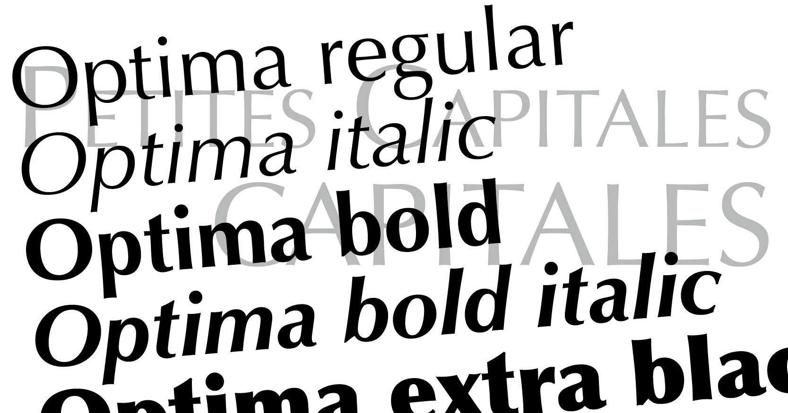
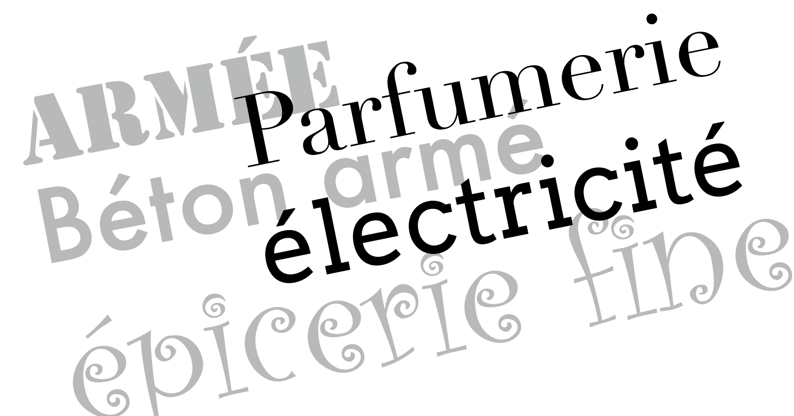
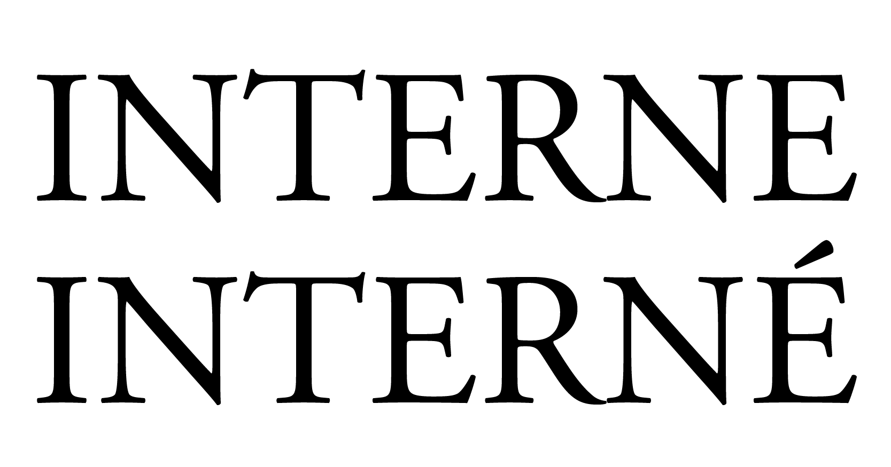
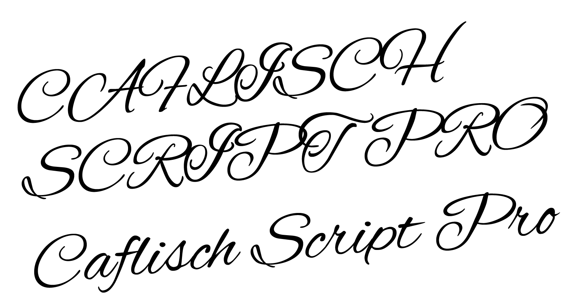
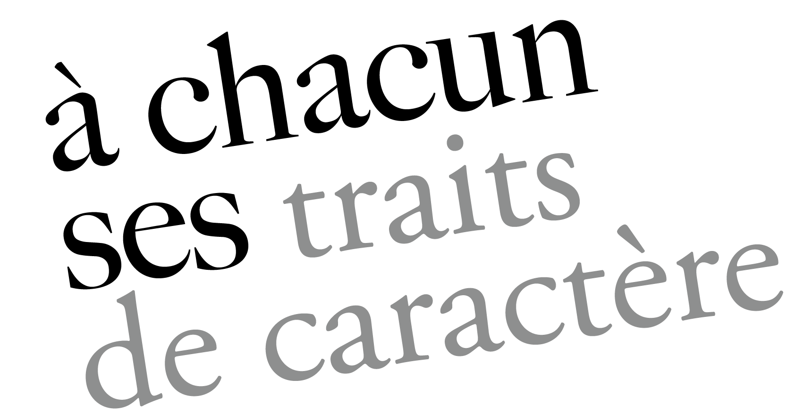

La sobriété est la marque de la qualité, le débutant veut toujours en faire trop, il veut toujours montrer ce qu'il sait ou croit savoir,
Maximilien Vox.
Chaque caractère, au-delà de sa forme purement graphique, possède son propre passé, véhicule un bagage culturel, historique et social, crée par sa seule présence sur une page, au-delà du sens des mots écrits, une véritable ambiance qu'il serait pour le moins regrettable d'ignorer.
Guide pratique de choix typographique, David Rault.

Les déclinaisons de police
Tant que cela est possible, il est de bon goût de recourir aux déclinaisons de police pour hiérarchiser les titres, sous-titres et autres intertitres, plutôt que de multiplier les dessins de caractères. Ainsi, nous privilégierons l'usage des variations de graisse, le style (roman ou italique), la casse, la chasse…

L'harmonie typographique
Les goûts et les couleurs appartiennent à chacun. Il n'en demeure pas moins qu'un minimum de fondamentaux s'imposent. De part leur histoire et leur forme les caractères véhiculent des idées et crée une ambiance autour du lecteur. Il convient donc de s'intéresser à l'histoire de la police retenue ou du moins à sa famille de rattachement (cf. classifications) pour l'exploiter convenablement.

Les capitales accentuées
La langue française est reconnue pour être riche. Cette richesse, elle l'a tient entre autre de ses accents. Sans les accents, les mots perdent tout leur sens. De ce fait, il apparaît évident qu'une lettre s'accentue, que le mot soit proposé en bas-de-casse comme en capitale. Cette évidence se vérifie aisément au détour du dictionnaire.

L'usage des capitales sur des Scriptes
L'usage des capitales dans les titrages peut se révéler de mauvais goût s'il est appliqué sur des scriptes ou fantaisies. La plupart du temps vous obtiendrez un effet esthétique des plus douteux, qui nuiera à la lisibilité du texte.

Une famille qui ne fait pas bon ménage !
Certaines polices ont beau appartenir à la même famille, elles ne s'accordent pas pour autant, bien au contraire. Il ne faut en aucun cas marier deux polices d'une même famille. La hauteur d'x, l'inclinaison de la traverse et bien d'autres éléments caractéristiques pourront être différents. De même, on limitera l'usage à deux voire trois familles de caractères pour un même document (hors encart publicitaire indépendant).